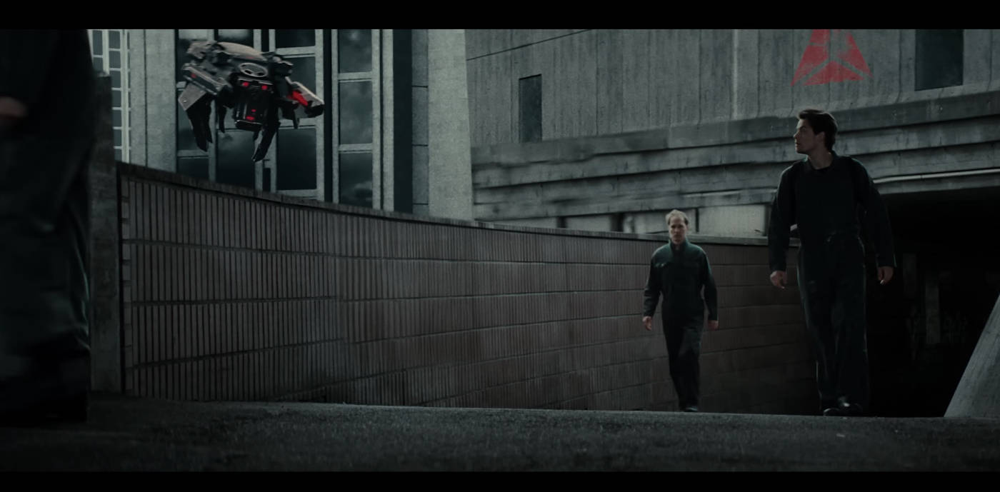
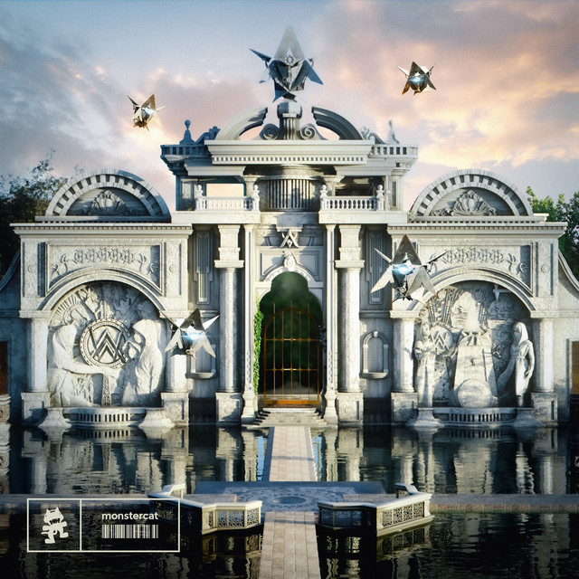

Sorpresivamente, Alan lanzo un album a un año de diferencia del anterior, siendo la 2da vez que hacia esto, aunque nos preguntamos si el album estaria a la altura de su predecesor.
Walkerworld es el 4to y ultimo album de Alan Walker a la fecha siendo lanzado el 10 de Noviembre del 2023 junto al sencillo Heart Over Mind del misno album.
TEMATICA
El album toma la tematica a simple vista de un parque de diversiones conformado por todas las partes de la historia ficticia contada en los demas albumnes, aunque mas adelante se sabria que tambien se centraria en las creaciones de los fans (wakers) que tambien hacian parte en la construccion, de este universo.
El album contendria 10 canciones que salieron el 10 de noviembre, donde se repite el patron de que la mitad de las canciones salieron antes del album, la ventaja es que al igual que walkerverse, estas canciones salieron el mismo año de lanzamiento del album, por lo que no afectaria tanto como en los 2 primeros albumnes.
Como dato extra, la portada fue diseñada por un fan, que publico su trabajo el mismo dia de la salida del album. La portada muestra una montaña rusa en el parque de walkerworld.
LAS CANCIONES EXTRAS
Alan realizo un directo un dia despues del lanzamiento del album donde se celebraba el lanzamiento del mismo y en este directo anuncio que agregaria mas canciones al album durante el transcurso de 2024, agregando 1 cancion por mes aunque esto no fue muy cierto hasta cierto punto, ya que hubo meses en que no saco nada, ademas de remixes. Hata la fecha ha lanzado un total de 10 sencillos de los cuales 1 no se considera como parte de walkerworld ya que a pesar de llevar la misma estetica, pertenece a un EP separado del album.
Las 9 canciones restantes podrian dividirse en 2 grupos, las que si fueron confirmadas como parte del album y las que no, ya que a partir del lanzamiento del EP Neon Nights no se sabe a ciencia cierta si los lanzamientos posteriores pertenecian al album. Existia una playlist en Spotify llamada Walkerworld donde venian las 10 canciones originales del album, la ultima en ser agregada a la playlist seria Barcelona, ya que despues seria lanzada Wake Up, que pertenecia oficialmente al EP Neon Nights, despues de este EP, la playlist desaparecio, razon por la que no se sabe si los lanzamientos posteriores serian igualmente agregados a walkerworld.
Las canciones extras de walkerworld hasta la fecha de hecha esta pagina son:
Agregadas en la playlist walkerworld
- Fire - Diciembre 2023
- Who I Am - Enero 2024
- Team Side - Marzo 2024
- Unsure - Mayo 2024
- Barcelona - Junio 2024
No agregadas en la playlist walkerworld
- Thick Of It All - Septiembre 2024
- Children Of The Sun - Septiembre 2024
- When I Grow Up - Octubre 2024
- Avalon - Noviembre 2024
¿Y WALKERVERSE?
Algo curioso, es que Walkerworld ya no siguio la linea argumental de walkerverse, sino que decidieron regresar a la linea argumental de world of walker, igualmente no se aclara la duda de si walkerverse y world of walker ocurrian en la misma linea de tiempo.
En cuanto a la historia, esta se situa entre los eventos de Tired y Fake a Smile siendo una precuela de la Drone War, hasta el momento aun no termina la trilogia de videos donde se cuenta la historia ya que segun esto iriamos en el capitulo 2 segun los videos musicales.
Con esto se expande el universo ficticio aunque dejando algunas dudas
Continua la historia en la siguiente imagen...
WALKERWORLD CREATION GAMES
El 13 de junio de 2024 Alan subiria un video donde revelaria el verdadero proposito de walkerworld, que era darle a los walkers un lugar donde explotar su creatividad. Por lo que con esto anunciaria lo que llamo Walkerworld creation games, que consistirian en que los walkers, subieran con un hashtag sus creaciones, fuera remixes, covers o artes relacionados al universo de Alan Walker, los 4 mejores ganarian una buena suma de dinero. Esto tuvo una buena respuesta por parte de los walkers que desataron toda su creatividad.NEON NIGHTS
Neon Nights, seria el nombre del EP que sacaria Alan de la mano del sello discografico Mosntercat, con 4 canciones nuevas entre las cuales vendria el sencillo Wake Up, el cual seria el sencillo principal del EP, este tuvo una muy buena recepcion por parte de los fans, ademas de que este EP fue parte del soundtrack de una temporada del juego Rocket League.
Algo que hay que aclarar, es que las canciones de este EP no forman parte del album. Otro dato interesante es que a partir de este EP, Alan ha lanzado todos sus sencillos con Mostercat.
Da click en la imagen para escuchar Neon Nights
¿ESTUVO A LA ALTURA?
Despues del lanzamiento oficial del album en 2023, llegue a la conclusion de que este fue un buen album, sin embargo, no creo que haya logrado superar a su antecesor.
ALgo que siento que le jugo en contra, fue el hecho de que alan quisiera meter mas canciones despues de lanzado el album, ya que la mayor parte de las que salieron no fueron muy buenas, y se notaba que habia un tanto de presion por sacar las canciones por el hecho de tener que sacar una al mes.
Aunque hay que decir que las canciones que salieron despues del EP Neon Nights, fueron bastante buenas, aunque no sabemos si son parte del album. Este album ha tenido tropiezos y algunos fans consideran que no ha sido el mejor y concuerdo, pero tampoco ha sido el peor de los 4, por lo que ahora solo queda preguntarnos...
¿CUANDO SALDRA AW5?
A la fecha de subida esta pagina, el album walkerworld ha cumplido ya 1 año de ser lanzado, y Alan no ha dado indicios de querer comenzar una nueva era con un quinto album, pero podriamos darnos una idea de cuando podria salir el siguiente album, dado a que la gira de walkerworld terminara a mediados del 2025, podriamos esperar que Alan anunciara su nuevo album antes de finales del 2025 y lanzarlo en noviembre como ya es costumbre, pero por el momento, nos queda disfrutar de este ultimo album y de los anteriores, y si quieres escuchar el Album walkerworld puedes hacerlo presionando la siguiente imagen.Escuchar Walkerworld